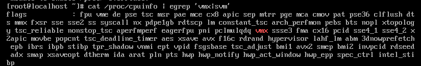
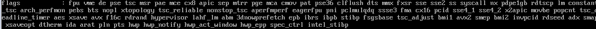
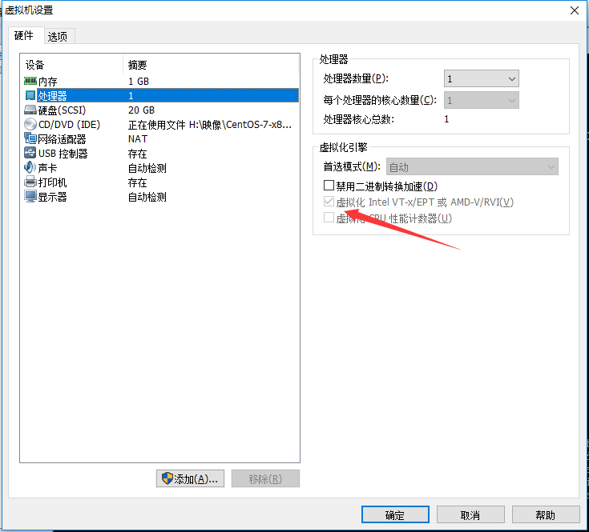
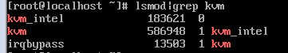
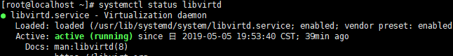

安装
安装环境为 Windows 10 v.1803， VMware12.5.9， CentOS 7.6.1810
首先装好VMware，并创建CentOS 7虚拟机，安装并配置好后可按照本文进行操作
1、检查CPU是否支持KVMcat /proc/cpuinfo | egrep 'vmx|svm'
这段指令是为了检查CPU是否支持VT技术，其中vmx对应Intel，svm对应AMD。返回结果如下:

如果有返回结果，说明CPU支持KVM虚拟机，直接跳到第二步
如果没有，像这样的返回结果

首先确认你的CPU是否支持VT技术 这是我的CPU(i5-8300H)在ZOL查到的信息
显示是支持的，前往Bios将VT设为Enable
再在VMware中将映像关机，开启VT设置选项

再次启动虚拟机，重复查询步骤，这时候就应该可以了。
2、安装KVM环境
使用CentOS yum命令来安装KVM基础包与管理工具yum -y install qemu-kvm libvirt virt-install bridge-utils
安装完成后重启主机，以便于KVM组件的加载
系统启动后。我们通过命令lsmod | grep kvm
来查看kvm是否安装成功并正确加载

开启KVM并设置开机自动启动systemctl start libvirtdsystemctl enable libvirtd
查看状态操作结果，出现Active:active(running)说明运行良好
systemctl status libvirtd
systemctl is-enabled libvirtd
